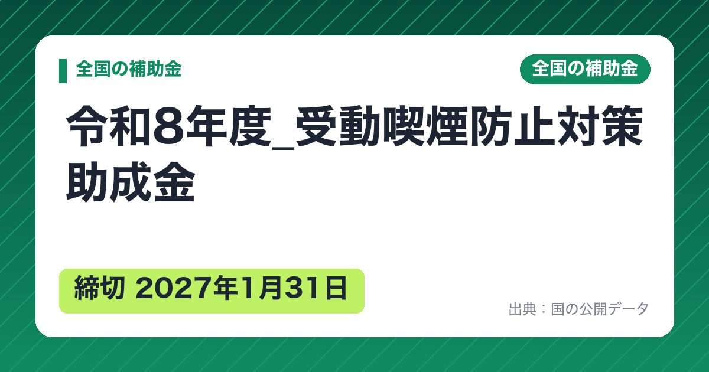

令和8年度_受動喫煙防止対策助成金

締切 2027年1月31日｜上限 100万円
概要
| 対象地域 | 全国 |
|---|---|
| 補助上限額 | 100万円 |
| 補助率 | ３分の２（主たる業種の産業分類が飲食店以外は２分の１） |
| 受付期間 | 2026年9月30日 〜 2027年1月31日 |
| 対象の従業員数 | 300名以下 |
| 利用目的 | 設備整備・IT導入をしたい |
| 対象業種 | 漁業 / 建設業 / 製造業 / 電気・ガス・熱供給・水道業 / 情報通信業 / 複合サービス事業 / サービス業（他に分類されないもの） / 公務（他に分類されるものを除く） / 分類不能の産業 / 農業、林業 / 鉱業、採石業、砂利採取業 / 運輸業、郵便業 / 卸売業、小売業 / 金融業、保険業 / 不動産業、物品賃貸業 / 学術研究、専門・技術サービス業 / 宿泊業、飲食サービス業 / 生活関連サービス業、娯楽業 / 教育、学習支援業 / 医療、福祉 |
| 実施機関 | 受動喫煙防止対策助成金 |
公募の内容（原文の抜粋）
■目的・概要
この助成金は、中小企業事業主による受動喫煙防止のための施設設備の整備に対し助成することにより、事業場における受動喫煙防止対策を推進することを目的としています。
■助成対象事業主
次のすべてに該当する事業主が対象です。
（１）健康増進法で定める既存特定飲食提供施設（※）を営む
※健康増進法に規定する第二種施設のうち、飲食店、喫茶店その他設備を設けて客に飲食をさせる営業が行われる施設で以下の３つの要件を満たすもの。
①令和２年（2020 年）４月 1 日時点で現に存する飲食店／②資本金 5,000 万円以下／③客席面積 100 ㎡以下
（２）労働者災害補償保険の適用事業主
（３）以下の表のいずれかに該当する中小企業事業主
※ 労働者数か資本金のどちらか一方の条件を満たせば、中小企業事業主となります。
業 種
常時雇用する労働者数
資本金
小売業
小売業、飲食店、配達飲食サービス業
50人以下
5,000万円以下
サービス業
物品賃貸業、宿泊業、娯楽業、医療・福祉、複合サービス（例：協同組合）など
100人以下
5,000万円以下
卸売業
卸売業
100人以下
１億円以下
その他の業種
農業、林業、漁業、建設業、製造業、
運輸業、金融業、保険業など
300人以下
３億円以下
（４）事業場の室内及びこれに準ずる環境において、措置を講じる区域以外を禁煙とする事業主
■助成対象
一定の要件を満たす喫煙専用室、指定たばこ専用喫煙室の設置等に必要な経費
助成対象
要件
喫煙以外での使用
喫煙専用室を
設置・改修する場合
（既存特定飲食提供施設）
○入口における風速が毎秒０．２ｍ以上
○煙が室内から室外に流出しないよう、壁、
天井等によって区画されていること
○煙を屋外又は外部の場所に排気すること
不可
指定たばこ専用喫煙室を
設置・改修する場合
（既存特定飲食提供施設）
○入口における風速が毎秒０．２ｍ以上
○煙が室内から室外に流出しないよう、壁、
天井等によって区画されていること
○煙を屋外又は外部の場所に排気すること
可
■助成率、助成額
喫煙室の設置などに係る経費のうち、工費、設備費、備品費、機械装置費などの ３分の２（主たる業種の産業分類が飲食店以外は２分の１）
上限100万円
詳細は「受動喫煙防止対策助成金の手引き」をご確認ください。
■申請からのプロセス
審査業務については、事業場の所在地の都道府県労働局労働基準部健康安全課（又は健康課）にて行います。
申請後には、事業場の所在地の都道府県労働局労働基準部健康安全課（又は健康課）からご連絡がいきますので、ご承知おきください。
■申請受理期間
令和９年１月３１日（日）２３：５９
なお、申請額が予算に達した場合、申請期日より前に申請を締め切る予定です。
お早めにお申し込みください。
※「受理」とは、すべての書類が揃い、誤った記載や書類の不足などの不備がない申請書類が提出されたことを確認できたことをいいます。
申請書を提出しただけでは受理となりませんので、ご注意ください。
（書類の不備等を避けるため、申請前に事業場の所在地の都道府県労働局労働基準部健康安全課（又は健康課）に申請についてご相談いただくことを推奨しております。）
■問合せ先
助成金の制度の内容や申請の相談については、
事業場の所在地の都道府県労働局労働基準部健康安全課（又は健康課）にお問い合わせ下さい。
都道府県労働局一覧（https://www.mhlw.go.jp/kouseiroudoushou/shozaiannai/roudoukyoku/index.html）
■注意事項
○申請者の方が、助成金の交付要綱、交付要領などの規定類をよく読み、制度の内容を理解してから申請してください。
○申請者の方が、申請する事業の内容を十分に把握して、申請を行ってください。
（社会保険労務士や施工業者が実質的に申請書の作成等を行った事例で、申請者が内容を理解しておらず、問題になった事例があります。）
○本助成金は、工事の実施前に申請が必要です。
また、交付決定前の契約や支払などについても、事前に手続きが必要になりますので、都道府県労働局に御相談ください。
○必要以上の性能を有する機械設備、高価な材料を用いた事業は、減額査定の対象となります。
（本助成金は100万円を上限としていますが、受動喫煙防止対策に必要な金額について、必要な限度で助成するものです。）
○交付決定を受けた内容から工事の内容を変更しようとする場合は、速やかに助成金の交付を受けた都道府県労働局に御相談ください。
○助成を受けて取得した機械設備や不動産について、改造、処分、譲渡、貸与等を行おうとする場合は、事前に都道府県労働局への申請が必要な場合があります。速やかに助成金の交付を受けた都道府県労働局にご相談ください。
（所定の手続きが必要となる場合があり、手続きを行わないと、返還の対象となります。）
■参照URL
「受動喫煙防止対策助成金の手引き」や申請様式等については、以下のURLからご確認ください。
https://www.mhlw.go.jp/stf/seisakunitsuite/bunya/0000049868.html
申請前の準備
- GビズIDプライム（電子申請に必須・無料・発行まで1〜2週間かかることあり）：gbiz-id.go.jp
- 直近の決算書（個人事業主は確定申告書の控え）
- 事業計画（何に使い、どう売上・生産性が上がるか）
- 見積書（買う物・頼む工事の）
ほとんどの補助金は、申請時に直近の決算書（個人は確定申告書）が必要で、交付後も経費の帳簿が求められます。
広告準備に使えるサービス：
・無料の会計自動化ソフト マネーフォワード クラウド会計  （法人の帳簿・決算書づくりを自動化）
（法人の帳簿・決算書づくりを自動化）
・やよいの青色申告オンライン  （個人事業主の青色申告に）
（個人事業主の青色申告に）
全国のほかの補助金
- 「太陽光発電導入拡大等技術開発事業」の第3回公募（締切 2026年11月25日）
- 【農林水産省】中山間地域所得確保推進事業（締切 2026年11月25日）
- 「ポスト5G情報通信システム基盤強化研究開発事業（社会課題解決に向けた量子コンピュータ次世代機開発・実証の加速）」（g12-2：部素材）の追加公募（締切 2026年11月26日）
- 【事前着手】令和8年度排出削減が困難な産業におけるエネルギー・製造プロセス転換支援事業（二次公募）（事業Ⅱ/紙パルプ・化学・セメント）（締切 2026年11月27日）
- 令和8年度排出削減が困難な産業におけるエネルギー・製造プロセス転換支援事業（二次公募）（事業Ⅱ/紙パルプ・化学・セメント）（締切 2026年11月27日）
- 令和７年度補正 ディマンドリスポンスの拡大に向けたIoT化推進事業（締切 2026年11月27日）
- 【令和８年度】二酸化炭素排出抑制対策事業費等補助金（地域再エネ水素ステーション保守点検等支援事業）（締切 2026年11月28日）
- 令和８年度二酸化炭素排出抑制対策事業費等補助金（運輸部門等の脱炭素化に向けた先進的システム社会実装促進事業のうち、農業機械の電動化促進事業）（締切 2026年11月30日）